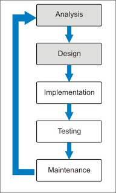

The overall view of the Web Development Life Cycle helps as a guideline to programmers/ web developers have a clear understanding of what the consumers want (what audience they want to target). This is a process that's mainly used for developing web pages at any level of difficulty. The Cycle includes 5 phases: Planning, Analysis, Design & Development, Testing, and finally Implementation & Maintenance (as shown below).
To get more in depth with each section of the cycle, we'll begin with planning. Planning is the set purpose of the website. What is the purpose of this Web site? Many developers don't think of this, but you need to understand their computing environments. With that information in mind, it'll better help you understand how the average user's computer hardware power is visiting your site, leading you to better optimize your site. Also, you can gather up your information using a site map. A graphic/information of site maps can be shown here more in depth for a better understanding.
In the analysis phase, web site creators must understand what information is relevant to the topic they are trying to represent to their audience. For example, if the developer wanted to create a website about house pets. Would he/she have information on house pets or football? House pets of course! You don't want to confuse your audience.
Additionally, the next step in the cycle is design & development. This is where you want to really put in perspective of the audience. Where will the title be located, the headings, information, contact, how will everything come together? You don't want to make your website too complicated to understand for the user; so that's why there are different web page layouts. Here are various types of layouts a website can have! To give a quickly summary, there are linear web site layouts, hierarchical website layouts, and webbed web site layouts.
Next on the cycle is testing. Before you officially publish your site, you have to test it first! Testing allows the developer to see any missed errors within their code or website. Also, it'll show how functional their website actually is. This helps to ensure accurate execution. Furthermore, this aids in showcasing that your website is not only working, but compatible with all of the different "main" web browsers, and mobile (if that's your intent). According to our content from chapter 1, there is also stress testing. Stress testing determines what happens on your web site when greater numbers of users access the site. It verifies that a web site runs at an acceptable speed with many users.
Finally, the last on our Web Development Cycle is the over all implementation & maintenance how your finished/ polished website. After you've completely finished and is comfortable with the outlining of your website, you publish it. Now, you're not finished yet because the developer (you) would have to keep maintenance on your website periodically. If you wish to update it, you'd have to go through the analysis/testing phase to ensure all bugs are out. Also, if you wish to change the complete look of your website, you'd go through the design & development phase yet again. For more details about the up keep of your website, visit here!